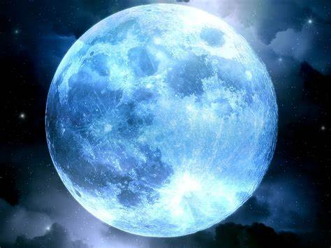

The Moon, Earth's only natural satellite, possesses an atmosphere that stands in stark contrast to the rich and dynamic gaseous envelope of our home planet. Unlike Earth, the Moon's atmosphere, often referred to as an exosphere, is exceedingly thin and tenuous. In fact, it is so sparse that it can be described as virtually nonexistent compared to the dense and life-sustaining atmosphere of Earth. Composed of extremely low-density gases, the lunar exosphere mainly consists of helium, neon, hydrogen, and traces of other elements. These elements are thought to have originated from various sources, including the solar wind, micrometeoroid impacts, and the degassing of the lunar interior. Unlike Earth's atmosphere, the Moon's exosphere lacks a significant concentration of nitrogen and oxygen, the primary components of breathable air. The lunar exosphere's rarity results in a striking absence of traditional weather phenomena.
There are no clouds, no winds, and no precipitation on the Moon. The absence of an atmosphere means that there is no medium for sound to travel through, rendering the Moon eerily silent. One of the most profound implications of the Moon's minimal atmosphere is its inability to support liquid water. On Earth, the atmosphere plays a crucial role in maintaining the right conditions for water to exist in its liquid state. However, without a substantial atmosphere to regulate temperature and pressure, water on the Moon is relegated to the solid and gaseous states. This lack of liquid water is a significant factor in the Moon's desolate and barren landscape. The absence of a substantial atmosphere also means that the Moon lacks the protective shield against solar radiation enjoyed by Earth.
The surface is directly exposed to the harsh solar wind and cosmic rays, making the Moon's surface a challenging environment for any potential future human exploration. Despite its thin and inhospitable atmosphere, the Moon's exosphere holds scientific value. Studying the composition and dynamics of the lunar exosphere provides insights into the history of our solar system, the interaction between celestial bodies and the space environment, and the fundamental processes that shape planetary atmospheres. In conclusion, the Moon's atmosphere, or lack thereof, is a testament to the diverse conditions that exist within our solar system. Its thin and sparse exosphere, devoid of the elements that characterize Earth's atmosphere, creates an otherworldly environment that has fascinated scientists and explorers alike, sparking curiosity about the broader mysteries of our celestial neighborhood.